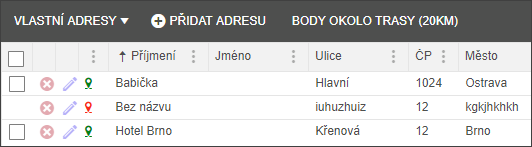
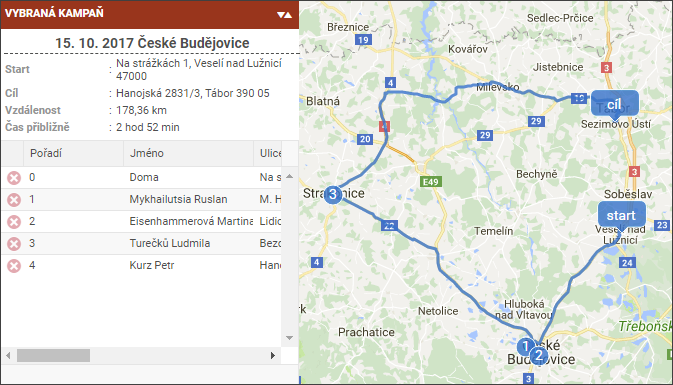
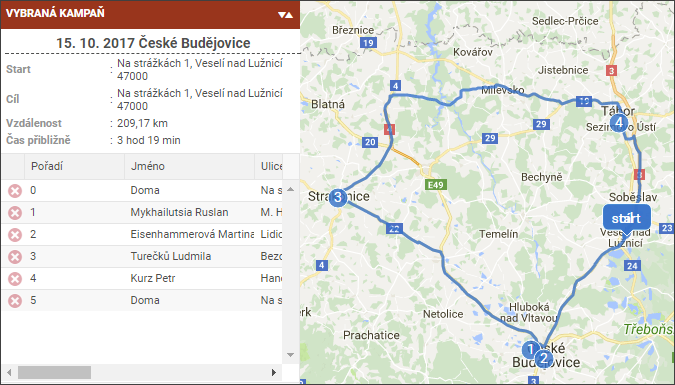

Vlastní adresy
Výběrem položky filtru Vlastní adresy se uživateli nejenom zobrazí všechny adresy, které jsou vloženy mimo veškeré spisy, ale zároveň se zpřístupní tlačítko pro přidání další vlastní adresy.

Vložená adresa je validována na platnost. Pokud je adresa správná a Google jí nalezne, pak je u ní zelená ikonka (adresa je validována). Pokud adresa je chybná, pak je na to uživatel upozorněn chybovým hlášením. Adresa je uložena s červenou ikonkou a na začátku řádky není zpřístupněno zaškrtávátko pro označení a přetažení do kampaně. Toto bude zpřístupněno až po správné validaci adresy.
Vlastní adresy mají v rámci trasace speciální režim:

